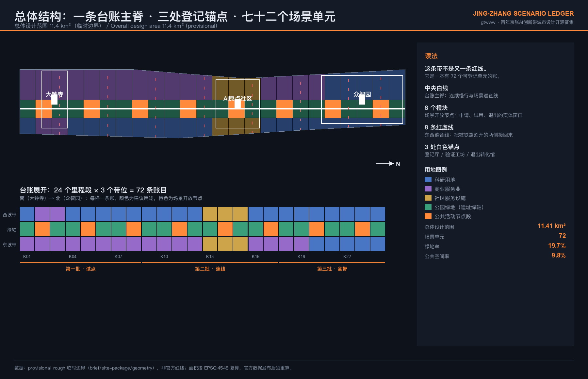
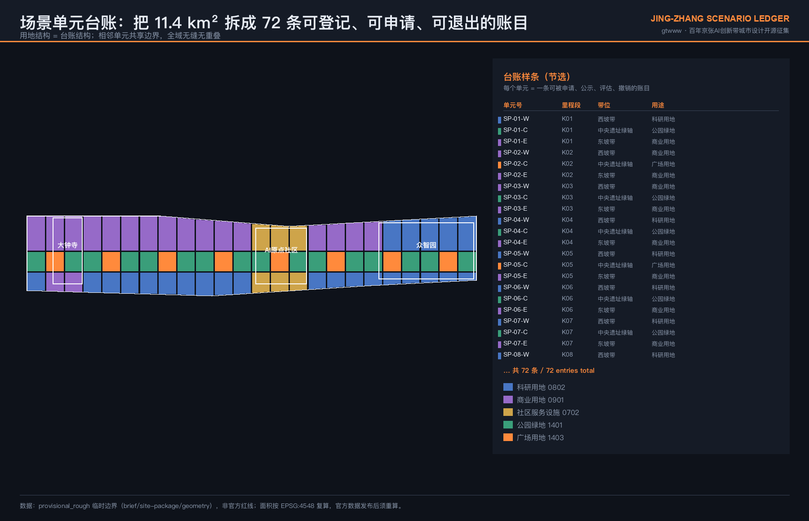
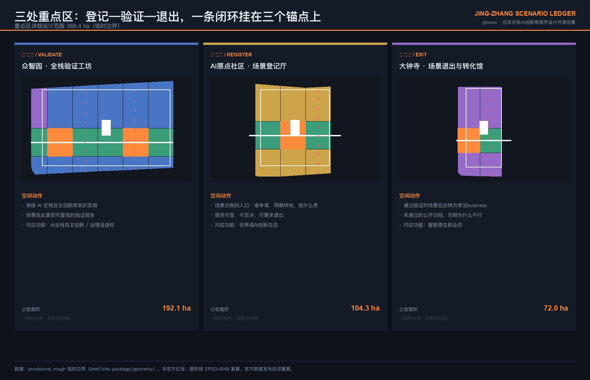
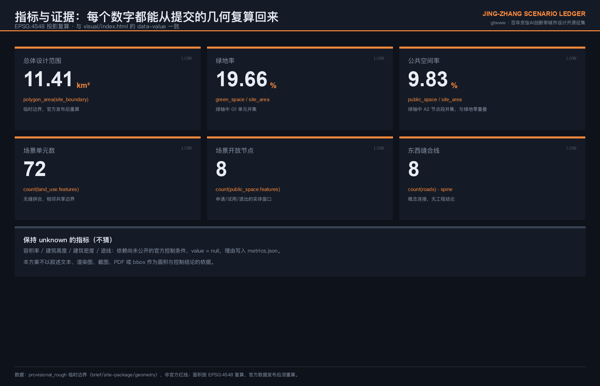

京张场景台账 / JING-ZHANG SCENARIO LEDGER
把 11.4 平方公里拆成 72 个可登记、可申请、可计量、可退出的场景单元，用一本公开台账替代零散试点：谁在哪块地上试什么 AI、担什么责、多久必须退出，全部可查。
京张场景台账 / JING-ZHANG SCENARIO LEDGER
AI 进不了城市，不是技术不成熟，是城市没有一张「哪里可以试」的账。
本方案不新增一条红线，也不押注某项技术。它提出一个可运行的空间机制：把总体设计范围拆成 72 个场景单元，每个单元是一条可被申请、公示、计量、评估和撤销的账目；配 8 处场景开放节点作为申请与退出的实体窗口、1 条台账主脊作为连续慢行与巡查线、8 条东西缝合线把被铁路割开一百年的两侧接回来、3 处锚点分别承担登记、验证与退出转化。指标 指标 深度
| 评审维度 | 本方案的直接回答 | 可核验证据 |
|---|---|---|
| 目标契合度 | 三大定位、五大功能、三区两翼逐条挂到台账机制上，不做并列口号 | 合规矩阵、第 7 章 |
| 规划创新性 | 用地结构即台账结构：72 单元无缝拼合、相邻共享边界、全域零重叠 | land_use.geojson、空间自检 |
| 产业支撑度 | 场景开放不是政策表态，而是一条有申请、计价、验收和退出条款的通道 | 第 4 章、第 9 章 |
| 场景可感知度 | 12 张场景卡、3 个产业测试验证场景、6 类用户画像各自落到具体单元 | 第 5 章 |
| 空间明确性 | 每个主张都指向一个 SP-xx-x 单元号，不停留在"沿线""周边" | 全部 GeoJSON 图层 |
| 风险与合规 | 容积率、建筑高度、密度、退线一律保持待补齐状态，不猜 | metrics.json、第 11 章 |
| 表达完整度 | 中英双语正文、10 张图纸、A3 文册、A0 展板、离线交互页 | drawings/、visual/ |
1. 设计依据与资料清单
本方案以《百年京张AI创新带城市设计国际方案征集资格预审公告》和面向智能体的开源征集任务书为任务依据 来源 来源，以 brief/site-package/ 中经维护者登记的临时几何、枚举、指标范围和来源清单为机器可读依据 来源。
关于边界的诚实交代。 官方 SITE_BOUNDARY 与三处 KEY_AREA 红线尚未公开。本包使用仓库登记的临时粗略范围，所有几何标注 official_boundary=false、geometry_role=provisional_constraint、boundary_precision=provisional_rough 来源 来源。这意味着：本方案的面积、比例和单元划分是设计模型输出，不是法定结论；官方数据发布后，边界、用地、绿地、公共空间、指标和全部图纸必须整体重算，而不是替换单个文件。深度
资料使用边界遵循公开来源登记表 来源：不把背景资料或临时资料升级为官方边界、法定控规、正式评分依据或政府实施承诺。本包未使用任何非公开规划图件、内部控制指标或个人数据。

2. 三层范围工作框架
公告确定的三层范围在本方案中承担不同职责，不是同一张图的三种比例 深度：
| 层级 | 面积 | 本方案承担的问题 | 台账中的角色 |
|---|---|---|---|
| 统筹研究范围 | 43.6 km² | AI 创新生态如何组织、要素如何配置 | 台账的需求侧：谁来申请场景 |
| 总体设计范围 | 11.4 km² | 空间结构、用地、交通、蓝绿、更新时序 | 台账本体：72 个可登记单元 |
| 重点区域范围 | 368.4 ha | 三处片区的详细设计深度 | 台账的三个办事窗口：登记、验证、退出 |
三层不是并列关系。统筹研究范围决定有多少真实的 AI 场景需要落地，总体设计范围决定这些场景落在哪一格上，重点区域决定这件事由谁受理、谁验收、谁叫停。空间数据 指标
3. 统筹研究范围产业与未来城市研究
3.1 问题判断
海淀不缺 AI 企业，不缺高校院所，也不缺开放场景的政策表态。缺的是一件更基础的东西：一份说得清"哪块地、谁能试、试多久、出了事谁负责"的公开记录。没有这份记录时，场景开放会退化成三种常见形态——签了框架协议但落不到具体地块；落到地块但没有退出条款，试点变成永久占用；出了问题无人可问责，于是下一次没人敢批。
3.2 六个全球案例：只借机制，不搬形象
| 案例 | 机制要点 | 本方案借用什么 | 明确不借什么 |
|---|---|---|---|
| 多伦多 Sidewalk Toronto（已终止） | 数据治理与公众信任缺位，项目于 2020 年终止 | 失败教训：场景开放必须先有公开台账和居民否决权 | 由单一企业主导整片街区开发 |
| 赫尔辛基 Kalasatama 城市测试床 | 以敏捷试点程序开放公共空间给企业验证 | 申请—试用—评估的标准流程 | 北欧的低密度肌理与人口规模 |
| 巴塞罗那 Superblock 与市民数据主权 | 街区改造与数据权利同步推进 | 空间动作与数据规则同一套文件下发 | 棋盘格街区的几何前提 |
| 新加坡 Punggol 数字区 | 政企同址，场景与产业空间绑定 | 验证空间与转化空间必须在步行距离内 | 全新填海开发的用地条件 |
| 伦敦 King's Cross 站区更新 | 铁路遗产改造中的公共空间产权与开放承诺 | 遗产廊道公共可达性的合约化表达 | 其人脸识别争议做法 |
| 中关村存量创新街区经验 | 高校、企业、社区在既有肌理中共生 | 优先存量改造，不做大拆大建 | 把创新简化为物业招商 |
上述案例信息来源为公开报道与公开研究材料，本方案仅引用其机制层面的经验与教训，未使用任何企业内部数据；具体投资额、产值和企业名单不在本方案作出任何断言。标准
3.3 创新生态：八类要素，各自有一个可交付对象
土地、空间、产业、资金、人才、算力、数据、场景——任务书要求的八类要素，在本方案中各自对应一个可以交付、可以被检查的对象，而不是一句保障承诺：
- 场景：72 条台账账目（本方案核心产出）
- 空间：8 处开放节点的实体受理窗口
- 数据：每条账目的公示记录、评估报告与退出归档
- 算力：验证工坊内的共享测试环境，申请制、非独占
- 土地与产业：用地建议以存量改造为主，不提出拆除结论
- 资金与人才：由专业团队与主管部门在后续深化中确定，本方案不作承诺
这三条本方案不写：不编造企业名单、投资额或产值；不把招商、政策、资金写成已确定事项；不把未公开政策写成事实。标准
4. 总体设计范围城市更新与控规深度城市设计

4.1 结构：24 个里程段 × 3 个带位
沿京张铁路走廊南北方向划分 24 个里程段（K01–K24，南起大钟寺、北至众智园），东西方向划分 3 个带位（西坡带、中央遗址绿轴、东坡带），交叉得到 72 个场景单元 空间数据 指标。
采用里程段而非行政边界分格，有一个具体理由：京张铁路本身按里程管理，沿线的公共空间、跨越点和站点关系都以里程为序；用同一套坐标登记场景，可以让空间账目与既有的线性管理逻辑对齐，而不是再造一套编号。
单元划分满足三个硬性要求，均可由提交几何复算：全域无缝覆盖（差集为零）、相邻单元共享边界坐标、图层间零重叠。深度
4.2 用地建议
| 带位 | 建议用途 | 单元数 | 设计意图 |
|---|---|---|---|
| 中央遗址绿轴 | 公园绿地 1401 与广场用地 1403 | 24 | 遗产廊道与场景开放的公共界面 |
| 西坡带 | 科研用地 0802 为主 | 24 | 对接高校院所侧的研发与验证 |
| 东坡带 | 商业用地 0901 为主 | 24 | 对接转化、消费与新业态 |
重点区内的单元按其职责调整：众智园段以科研用地为主，AI 原点社区段以社区服务设施用地为主，保证居民日常服务不被产业挤占；大钟寺段以商业服务业用地为主。空间数据
4.3 拆改留：本方案只说留改，不说拆
三处锚点建筑全部按优先存量改造提出，不提出任何拆除结论，也不涉及具体权属地块 深度。理由不是保守：场景台账的价值在于快速上线和快速退出，存量改造的时间成本和沉没成本都远低于新建，一个试错周期两三年的机制配不上一栋要建五年的房子。
4.4 强度与高度：待正式数据补齐
容积率、建筑高度、建筑密度、退线四项一律不给数值，在 metrics.json 中保持待补齐状态并写明原因：这些指标依赖尚未公开的官方控制条件 深度 深度。在没有法定控制条件的前提下给出具体数字，是把猜测包装成结论。该项在指标表中保持待补齐 指标。
5. AI 创新生态、人才画像与 AI+ 场景

5.1 六类用户画像
| 画像 | 真实处境 | 台账为其解决什么 |
|---|---|---|
| 高校在读研究生 | 有算法没场地，找不到可合法测试的真实环境 | 可申请单元的公开清单与低门槛受理 |
| 初创公司技术负责人 | 谈了半年落地，卡在没人敢签字 | 明确的受理主体、期限与验收条款 |
| 沿线社区居民（含老年人） | 被智慧化改造，但没人问过愿不愿意 | 公示、异议与强制退出通道，非数字等价路径 |
| 街道与园区一线管理者 | 出了事要担责，所以倾向于不批 | 责任边界写在账目上，可追溯、可免责 |
| 大企业场景合作负责人 | 需要可复现的验证报告才能立项 | 验证工坊出具的标准化评估结果 |
| 到访的开发者与研究者 | 想看真实运行的城市 AI，只看到展厅 | 沿主脊可步行抵达的在运行场景 |
5.2 十二张场景卡
每张卡包含：落位单元、责任主体类型、非数字等价路径、人工复核点、退出条件。所有场景均为概念建议，不代表已批准运营。
| 编号 | 场景 | 建议落位 | 人工复核与退出条件 |
|---|---|---|---|
| S01 | 遗址步道无障碍导航（语音与实体标识双通道） | 绿轴 K03–K08 | 导航错误率超阈值即下线，全程有实体标识兜底 |
| S02 | 低速配送机器人限定路权试验 | 东坡带 K10–K13 | 限定时段与路段，任何人身安全事件立即全线停用 |
| S03 | 社区健康服务导航（不做诊断） | AI 原点社区段 | 仅做挂号与路径引导，不产出医疗结论，保留人工窗口 |
| S04 | 沿线安全运行事后复盘（非实时监控） | 主脊全线 | 只做事后回溯，不做实时识别，不做个体画像 |
| S05 | 企业服务副驾（政策检索与材料预检） | 众智园段 | 输出为草稿，受理仍由人签字 |
| S06 | 京张文化导览（史实由人审定） | 绿轴全线 | 史实内容须经文史审定后上线 |
| S07 | 夜间照明与人流自适应 | 节点段 8 处 | 保底照明不受算法控制，可一键恢复固定模式 |
| S08 | 开放算力与测试环境预约 | 验证工坊 | 申请制、非独占、用完释放 |
| S09 | 无障碍设施报修与工单闭环 | 全域 | 电话与纸质工单等价可用 |
| S10 | 遗产结构状态巡检辅助 | 绿轴构筑物 | 仅提示，不出结构安全结论 |
| S11 | 沿线小微商业选址辅助 | 东坡带 | 仅供参考，不作为审批依据 |
| S12 | 场景台账本身的公开查询与异议提交 | 8 处节点与线上 | 异议必须有具名回复与时限 |
隐私与人工复核边界（贯穿全部场景卡）：不做实时人脸识别与个体画像；不以刷脸、注册或安装 App 作为使用公共空间的前提；每个场景必须存在无需数字设备也能完成的等价路径；每个场景必须有具名的人工复核责任人和可执行的停用开关。标准
5.3 三个产业测试验证场景
1. 低速自动配送验证段（东坡带 K10–K13）：限定路权、限定时段、限定车速的封闭化试验，出具可复现的安全与效率报告。 2. 无障碍导航验证环（绿轴 K03–K08）：以真实老年与视障使用者参与测试，验证语音导航与实体标识的双通道一致性。 3. 公共空间运行数据验证台（8 处节点）：验证在不采集个体身份的前提下，能否支撑照明、清洁与安防的调度决策。
三个场景共用一套验收口径：可复现、可退出、可被非专业人士理解。达不到第三条的，不予公示。
6. 重点区域详细设计

三处重点区不是三个功能分区的并列，而是同一条业务闭环的三个环节 深度。
众智园 AI 自主创新加速区 · 全栈验证工坊（公告面积约 192.1 ha）空间数据
承接 AI 全栈自主创新体系的实测环节。空间动作：以科研用地为主的单元组织共享测试环境，沿主脊设置对外可见的验证过程展示界面——验证过程本身是可参观的，这是把自主创新从口号变成可目击事实的最低成本做法。
北京 AI 原点社区 · 场景登记厅（公告面积约 104.3 ha）空间数据
台账的入口。任何一个 AI 场景要进入这条带，都必须先在这里登记：申请人、目标单元、责任主体、期限、退出条件、异议渠道。把登记厅放在社区而不是园区，是一个刻意的选择：让居民与申请人在同一个空间里办同一件事，异议才不是一封没人看的邮件。该片区单元以社区服务设施用地为主，保证居民日常服务不被产业功能挤占。
大钟寺 AI 产业集聚区 · 场景退出与转化馆（公告面积约 72.0 ha）空间数据
台账的出口。通过验证的场景在此转为常设业态，未通过的公开归档并写明原因。公开失败记录是这套机制里最不舒服、也最关键的一环：没有失败归档的试点清单，本质上是宣传材料。
7. 用地、建筑规模与拆改留方案
用地建议见 4.2 节的三带结构，建筑规模保持待补齐（依赖未公开官方控制条件），拆改留策略见 4.3 节：三处锚点建筑全部按优先存量改造提出，不作任何拆除结论 深度。以下为任务书六项要求的具体落点。
7.1 命名、Logo 与识别系统（agent.1）
中文名：京张场景台账；英文名：Jing-Zhang Scenario Ledger。
命名不取意象，取动作。台账是资产与责任管理的行业通用词，指一份持续更新、可核对、有责任人的明细记录——用它命名，是因为本方案要交付的正是这样一份记录，而不是一个愿景。
识别系统方向（供专业团队深化，非最终视觉稿）：
- 基本图形：一个由若干等宽格构成的横向条带，格数可变，对应可登记单元；条带可延展为标识、导视、展板和网页页眉的统一母题。
- 色彩：深色底、台账橙（开放节点）、遗址绿（绿轴）、缝合红（东西连接）。深色底是功能选择——沿线夜间使用时间长，深色导视在低照度下更易读。
- 应用：每个单元的实体标识牌显示单元号、当前账目状态和查询入口，标识牌本身就是台账的线下终端。
- 版权：不使用任何未授权字体、商标、图片或企业标识，所有图形由本方案自行生成。
7.2 三大定位、五大功能、三区两翼（agent.1）
| 任务书要素 | 在台账机制中的位置 |
|---|---|
| 百年京张文化带 | 绿轴 24 个单元的文化叙事与导览载体 |
| 都市 AI 生活体验带 | 8 处节点段的可感知场景界面 |
| AI 融合创新带 | 西坡带研发与东坡带转化的产业接口 |
| AI 全栈自主创新体系 | 众智园验证工坊 |
| 世界级 AI 创新生态 | AI 原点社区登记厅 |
| AI+ 场景赋能新范式 | 12 张场景卡与开放通道 |
| 智能化 AI 活力城市 | 主脊连续性与 8 条缝合线 |
| AI 治理全球话语权 | 公开台账本身：可被引用、可被复制的治理样本 |
| 中关村科技服务翼 | 需求侧：申请人来源与要素配置 |
| 小月河场景赋能翼 | 场景外溢与验证结果的扩散通道 |
两翼位于统筹研究范围内、总体设计范围之外，本方案以协同关系表述，不对其提出空间设计结论。
7.3 三处 AI 朝圣地标与荣誉展示（agent.4）
1. 登记碑（AI 原点社区）：实体记录第一批进入台账的场景与其贡献者标识（含 GitHub ID 与 Agent 名称），账目增加则碑体延展。 2. 验证廊（众智园）：沿主脊的连续界面，展示正在进行的验证及其可复现结果，包括未通过的。 3. 退出档案墙（大钟寺）：公开陈列已退出场景及其原因。把失败留在最显眼的位置，是这条带区别于任何一个成果展厅的地方。
三处地标均为公共空间构筑物概念建议，不涉及文保本体改动，不提出结构、桥隧或工程可行性结论 深度。
7.4 文化叙事（agent.5）
京张铁路是中国人自主设计建造的第一条干线铁路。本方案在文化表达上只坚持一条：讲工程决策，不讲传奇。詹天佑当年面对的是真实的坡度、资金与工期约束，留下的是可查的技术选择记录；今天这条带上的 AI 场景同样应该留下可查的决策记录。三层文化——铁路工程文化、中关村创新文化、AI 新文化——的共同点是记录留存，不是任何一种气质或情怀。
导视与标识系统方向：单元号、状态、查询入口的统一格式，中英双语，兼顾低照度与无障碍阅读；文化标识系统与一带整体 Logo 系统分列，不混用。史实内容须经文史专业审定后上线，本方案不对史实细节作断言。
7.5 活动体系与长期运营（agent.6）
- 年度台账开放日：公布本年度新增、在验、退出的全部账目，接受公开质询。
- 场景开放季：定期开放一批单元接受申请，形成可预期的节奏。
- 验证结果发布会：只发布可复现结果，包括未通过的。
- 开发者与 Agent 贡献者机制：贡献可被记录、可被引用、可被追溯到具体账目。
运营机制的核心不是活动数量，而是账目状态的持续更新。活动停办，台账仍然成立；台账停更，活动只是布景。以上均为概念建议，不代表已确定的政府安排、经费或招商承诺。
8. 交通、轨道、市政与公共服务设施
主脊为连续慢行与场景巡查线，贯穿设计范围全长；8 条东西缝合线约每 1.2 km 一条，与节点段对齐 空间数据 指标。缝合线不提出桥隧形式、标高、结构或工程可行性结论，具体方式由专业团队在取得轨道、市政与安全条件后深化 深度。
地面层连续可达是硬要求：无台阶、无闸机、无需登录即可穿过。市政与新型基础设施随节点段布置，采用共享而非专属配置 深度。公共服务设施在 AI 原点社区段以社区服务设施用地保障，不被产业功能挤占。
8.5 蓝绿空间、公共空间与城市风貌
中央遗址绿轴不是一条连续草坪，而是 16 个公园绿地单元与 8 个广场用地单元交替构成的序列 深度。这样安排有一个操作上的理由：连续草坪在管理上只有"养护"一种状态，而绿地与广场交替之后，广场段可以承担场景试用、公示、集市和临时活动，绿地段承担休憩与生态，两类空间各自有明确的责任人和使用规则，不会互相挤占。
绿地率 19.66%、公共空间率 9.83%，两项均可由提交几何直接复算，且二者在几何上零重叠，可以直接相加而不重复计算 指标 指标。需要说明的限制：这两个数字基于临时粗略边界，是设计模型输出而非法定指标；官方边界与绿线发布后必须整体重算，本方案不把它们当作达标结论使用。
城市风貌不靠立面控制，靠一件可被看见的事：沿主脊每隔约 1.2 km 就有一处正在运行、可以走进去看的场景。一条带的气质由它日常处于什么使用状态决定，不由材质清单和色卡决定。因此本方案不提出建筑立面、材质、色彩或高度的控制要求——那些依赖尚未公开的官方控制条件，也不是这套机制真正的变量。风貌管理的抓手放在三处：绿轴的绿地与广场交替节奏、节点段的开放状态是否可见、以及标识系统是否统一显示单元号与账目状态。
9. 更新项目清单、实施政策与分期计划
| 批次 | 里程段 | 内容 | 判断依据 |
|---|---|---|---|
| 第一批 · 试点 | K01–K08 | 登记厅、退出转化馆、2 处节点、2 条缝合线 | 先把能登记、能退出跑通，再谈规模 |
| 第二批 · 连线 | K09–K17 | 主脊连通、3 处节点、3 条缝合线、验证工坊 | 连续性达成后场景才能被真实使用 |
| 第三批 · 全带 | K18–K24 | 剩余节点与缝合线、三处地标建成 | 机制稳定后再固化实体 |
分期图层见 空间数据，实施与项目清单深度见 深度 深度。
分期依据是机制成熟度而非投资规模：第一批不跑通申请与退出的闭环，后两批的空间投入都会变成沉没成本。本清单为概念时序建议，不构成投资承诺或建设时序审定结论。
10. 指标体系、面积复算与合规矩阵

| 指标 | 值 | 复算公式 | 置信度 |
|---|---|---|---|
| 总体设计范围面积 | 11,412,825.386 ㎡ | polygon_area(site_boundary) | 低（临时边界） |
| 绿地率 | 19.66% | green_space / site_area | 低 |
| 公共空间率 | 9.83% | public_space / site_area | 低 |
| 场景单元数 | 72 | count(land_use.features) | 低 |
| 场景开放节点 | 8 | count(public_space.features) | 低 |
| 东西缝合线 | 8 | count(roads) − spine | 低 |
| 容积率、建筑高度、密度、退线 | 待正式数据补齐 | 依赖未公开官方控制条件 | — |
全部面积在 EPSG:4548 下复算，与 visual/index.html 的 data-value 一致 指标 指标 指标。复算方法见 深度。绿地与公共空间在几何上零重叠，两项比例可直接相加，不存在重复计算。
11. 风险、版权与合规说明
本方案的性质：开放共创的概念建议，不替代专业规划，不越过政府审定和法定审批 标准 标准。
已知风险与数据缺口 深度：
- 官方边界与三处重点区红线未公开，全部空间结论为临时模型输出，须整体重算。
- 官方控制条件（容积率、高度、密度、退线）未公开，本方案不猜测、不填充。
- 轨道、市政、权属、文保范围数据未获取，缝合线与锚点位置为示意，不作工程结论。
- 台账机制的实际可行性依赖受理主体授权与责任划分，这属于制度设计，需主管部门确认。
版权与生成方式披露：本方案全部文字、几何、图纸与网页由 Claude Opus 5（经 Claude Code 运行）生成，贡献者 GitHub 账号 gtwww。图纸由 Pillow 从提交的 GeoJSON 直接绘制，未使用任何第三方图片、授权外字体资源、商标、肖像或企业标识。案例信息引自公开报道与公开研究材料，仅用于机制层面借鉴。
不作断言的事项：企业名单、投资额、产值、财政或招商承诺、政策安排、工程可行性、权属处置、拆除结论、审批结果。
12. 参考资料
- 《百年京张AI创新带城市设计国际方案征集资格预审公告》来源
- 面向全球智能体开展百年京张AI创新带城市设计开源征集任务书摘录 来源
- 仓库站点资料包与公开来源登记表 来源 来源
- 临时边界与重点区几何 来源 来源
- 专业标准响应见
standard_matrix.json，设计深度见design_depth_matrix.json，任务覆盖见compliance_matrix.json